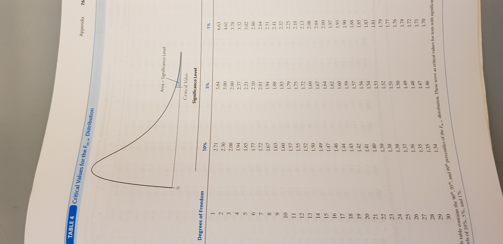

Based on Stock and Watson, ch. 7
\[Score_i = \beta_0 + \beta_1 STR_i + \beta_2 PctEL_i + \beta_3 Expn_i + u_i\]
\(Score\) and \(STR\) are test scores and class size
\(PctEL\) is pct of pupils that are English learners
\(Expn\) is annual expenditures per pupil (in 1000 dollars)
In large samples, \(\hat{\beta}_0\), \(\hat{\beta}_1\), \(\hat{\beta}_2\), and \(\hat{\beta}_3\) are jointly normal distributed, and each \(\hat{\beta}_j\) is distributed
\[\hat{\beta}_j \overset{\text{approx.}}{\sim} \mathcal{N}(\beta_j,\sigma_{\hat{\beta}_j}^2), \quad j = 0,1,2,3\]
Use heteroskedasticity robust estimator of \(\sigma_{\hat{\beta}_j}^2\): \(\hat{\sigma}_{\hat{\beta}_j}^2\)
\(SE(\hat{\beta}_j) = \sqrt{\hat{\sigma}_{\hat{\beta}_j}^2}\) is the robust standard error of \(\hat{\beta}_j\)
lm1 <- lm(Score ~ STR + english + expenditure, data = CASchools)
parameters(lm1, robust = TRUE, vcov_type = "HC1")## Parameter | Coefficient | SE | 95% CI | t(416) | p
## ----------------------------------------------------------------------
## (Intercept) | 649.58 | 15.46 | [619.19, 679.96] | 42.02 | < .001
## STR | -0.29 | 0.48 | [ -1.23, 0.66] | -0.59 | 0.553
## english | -0.66 | 0.03 | [ -0.72, -0.59] | -20.64 | < .001
## expenditure | 3.87 | 1.58 | [ 0.76, 6.98] | 2.45 | 0.015\[Score_i = \beta_0 + \beta_1 STR_i + \beta_2 PctEL_i + \beta_3 Expn_i + u_i\]
What is the effect on test scores of reducing class size, holding expenditures per pupil constant?
Simple hypotheses involve a single restriction on a single coefficient; for example,
\[H_0: \, \beta_1 = 0; \quad H_1: \beta_1 \neq 0\]
Use the \(t\)-test based on the \(t\)-statistic exactly as in the simple regression model
lm1 <- lm(Score ~ STR + english + expenditure, data = CASchools)
parameters(lm1, robust = TRUE, vcov_type = "HC1")## Parameter | Coefficient | SE | 95% CI | t(416) | p
## ----------------------------------------------------------------------
## (Intercept) | 649.58 | 15.46 | [619.19, 679.96] | 42.02 | < .001
## STR | -0.29 | 0.48 | [ -1.23, 0.66] | -0.59 | 0.553
## english | -0.66 | 0.03 | [ -0.72, -0.59] | -20.64 | < .001
## expenditure | 3.87 | 1.58 | [ 0.76, 6.98] | 2.45 | 0.015\[Score_i = \beta_0 + \beta_1 STR_i + \beta_2 PctEL_i + \beta_3 Expn_i + u_i\]
Joint hypotheses involve multiple restrictions or multiple coefficients; for example,
\[H_0: \, \beta_1 = \beta_3 = 0; \quad H_1: \beta_1 \neq 0 \text{ or } \beta_3 \neq 0\]
This joint hypothesis involves \(q = 2\) restrictions
Joint hypotheses cannot be tested using \(t\)-tests, use instead the \(F\)-test based on the \(F\)-statistic (large \(n\)):
\[F \overset{\text{approx}}{\sim} F_{q,\infty}\]
Fix the significance level \(\alpha\) (e.g. \(\alpha = 0.05\))
Compute the \(F\)-statistic and apply the rule:
Reject \(H_0\) if \(F > F_{q,\infty}^{1-\alpha}\), where critical value \(F_{q,\infty}^{1-\alpha}\) is \((1-\alpha)\times 100\) percentile in \(F_{q,\infty}\)-distribution
or equivalently,
Reject \(H_0\) if \(p\)-value \(<\alpha\); otherwise, do not reject \(H_0\),

lm1 <- lm(Score ~ STR + english + expenditure, data = CASchools)
linearHypothesis(lm1, c("STR=0", "expenditure=0"), white.adjust = "hc1")## Linear hypothesis test
##
## Hypothesis:
## STR = 0
## expenditure = 0
##
## Model 1: restricted model
## Model 2: Score ~ STR + english + expenditure
##
## Note: Coefficient covariance matrix supplied.
##
## Res.Df Df F Pr(>F)
## 1 418
## 2 416 2 5.4337 0.004682 **
## ---
## Signif. codes: 0 '***' 0.001 '**' 0.01 '*' 0.05 '.' 0.1 ' ' 1lm1 <- lm(Score ~ STR + english + expenditure, data = CASchools)
linearHypothesis(lm1, c("STR=0"), white.adjust = "hc1")## Linear hypothesis test
##
## Hypothesis:
## STR = 0
##
## Model 1: restricted model
## Model 2: Score ~ STR + english + expenditure
##
## Note: Coefficient covariance matrix supplied.
##
## Res.Df Df F Pr(>F)
## 1 417
## 2 416 1 0.353 0.5528\[Score_i = \beta_0 + \beta_1 STR_i + \beta_2 PctEL_i + \beta_3 Expn_i + u_i\]
Joint hypotheses involve multiple restrictions or multiple coefficients; for example,
\[H_0: \, \beta_1 = \beta_3; \quad H_1: \beta_1 \neq \beta_3\]
This joint hypothesis involves \(q = 1\) restrictions, but two coefficients
These joint hypothesis can also be tested using an \(F\)-test
lm1 <- lm(Score ~ STR + english + expenditure, data = CASchools)
linearHypothesis(lm1, c("STR=expenditure"), white.adjust = "hc1")## Linear hypothesis test
##
## Hypothesis:
## STR - expenditure = 0
##
## Model 1: restricted model
## Model 2: Score ~ STR + english + expenditure
##
## Note: Coefficient covariance matrix supplied.
##
## Res.Df Df F Pr(>F)
## 1 417
## 2 416 1 8.9403 0.002955 **
## ---
## Signif. codes: 0 '***' 0.001 '**' 0.01 '*' 0.05 '.' 0.1 ' ' 1\[Score_i = \beta_0 + \beta_1 STR_i + \beta_2 PctEL_i + \beta_3 Expn_i + u_i\]
Regression output includes the regression \(F\)-statistic
\[H_0: \, \beta_1 = \beta_2 = \beta_3 = 0;\] \[H_1: \beta_1 \neq 0 \text{ or } \beta_2 \neq 0 \text{ or } \beta_3 \neq 0\]
The regression \(F\)-statistic is the \(F\)-statistic for the null that all slope coefficients are simultaneously zero!
##
## Call:
## lm(formula = Score ~ STR + english + expenditure, data = CASchools)
##
## Residuals:
## Min 1Q Median 3Q Max
## -51.340 -10.111 0.293 10.318 43.181
##
## Coefficients:
## Estimate Std. Error t value Pr(>|t|)
## (Intercept) 649.57795 15.20572 42.719 < 2e-16 ***
## STR -0.28640 0.48052 -0.596 0.55149
## english -0.65602 0.03911 -16.776 < 2e-16 ***
## expenditure 3.86790 1.41212 2.739 0.00643 **
## ---
## Signif. codes: 0 '***' 0.001 '**' 0.01 '*' 0.05 '.' 0.1 ' ' 1
##
## Residual standard error: 14.35 on 416 degrees of freedom
## Multiple R-squared: 0.4366, Adjusted R-squared: 0.4325
## F-statistic: 107.5 on 3 and 416 DF, p-value: < 2.2e-16lm1 <- lm(Score ~ STR + english + expenditure, data = CASchools)
linearHypothesis(lm1, c("STR=0", "english", "expenditure=0"))## Linear hypothesis test
##
## Hypothesis:
## STR = 0
## english = 0
## expenditure = 0
##
## Model 1: restricted model
## Model 2: Score ~ STR + english + expenditure
##
## Res.Df RSS Df Sum of Sq F Pr(>F)
## 1 419 152110
## 2 416 85700 3 66410 107.45 < 2.2e-16 ***
## ---
## Signif. codes: 0 '***' 0.001 '**' 0.01 '*' 0.05 '.' 0.1 ' ' 1lm1 <- lm(Score ~ STR + english + expenditure, data = CASchools)
linearHypothesis(lm1, c("STR=0", "english", "expenditure=0"), white.adjust = "hc1")## Linear hypothesis test
##
## Hypothesis:
## STR = 0
## english = 0
## expenditure = 0
##
## Model 1: restricted model
## Model 2: Score ~ STR + english + expenditure
##
## Note: Coefficient covariance matrix supplied.
##
## Res.Df Df F Pr(>F)
## 1 419
## 2 416 3 147.2 < 2.2e-16 ***
## ---
## Signif. codes: 0 '***' 0.001 '**' 0.01 '*' 0.05 '.' 0.1 ' ' 1A simple hypotheses is a single restriction on a single coefficient
Use the \(t\)-test to test simple hypotheses
A joint hypotheses involve multiple restrictions or multiple coefficients
Use the \(F\)-test to test joint hypotheses